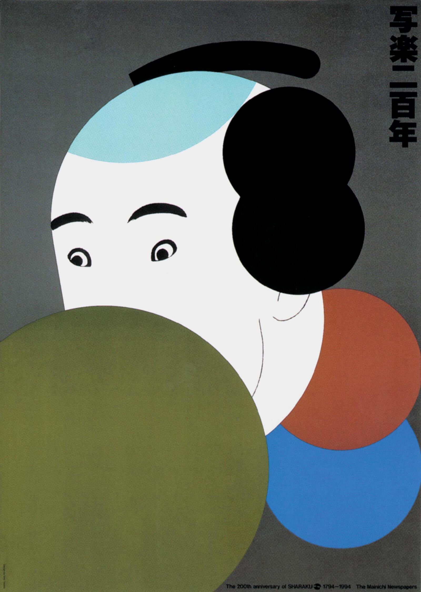
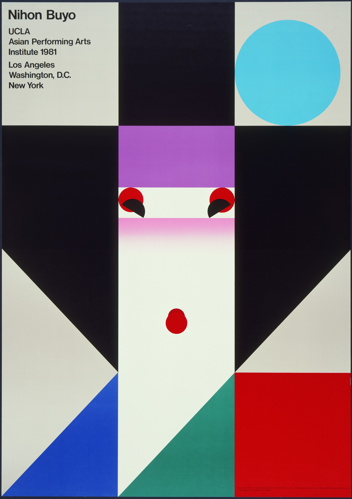

The 200th Anniversary of Sharaku
1994
The art creates contrast between parts of the portrait which makes it unusual and something that is definetly not in our world.
Japanese Graphic Designer
.jpg)
Born in Nara City, Nara Prefecture in 1930. Graduated from the Design Department of the Kyoto City Technical School of Art. Moved to Tokyo in 1957 and traveled to the United States on a study tour in 1960.
Opened the Ikko Tanaka Design Room in Aoyama in 1963. Since establishing the Tokyo-based Ikko Tanaka Design Studio in 1963, he has created the display design for the Oceanic Cultural Museum at the Ocean Expo ’75 in Okinawa, designed the symbols for Expo ’85 in Tsukuba and World City Expo Tokyo ’96.
His work is in the permanent collections of NY MoMA and Stedelijk Museum Amsterdam. In Toronto, Calgary and other cities, he exhibited works in which he expressed his global concern for humanity. AGI lost a great, fine man when Ikko’s heart gave up.
Take a look at some of the works made by Ikko Tanaka.

1994
The art creates contrast between parts of the portrait which makes it unusual and something that is definetly not in our world.

1986
This piece shows how different art styles can combine and resonance with each other.

1981
This artwork shows traditional japanese women suit in Ikko Tanaka minimalist geometric style.
Sources used in this website.